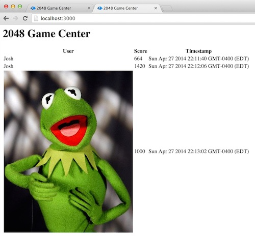

This is a security analysis of 2048 Game Center, a web application developed by Hartigan, J for COMP 20 assignment 4. The 2048 Game Center a server-side web application that “maintains final scores and grids for 2048 games for a long period of time”. It offers an API where other domains such as a 2048 game can post the score and final grids to the Game Center. The 2048 Game Center also provides an API where users can get a JSON string of scores and final grids for a specified player.
To test the application, I first conducted “black box” testing, for which I tried several attacking without reading the source ode. Then I did the “white box” testing, after I studied the source code. I downloaded the source code of the app, and hosted locally for the tests.
There are three vulnerabilities found in this application: (1) The input of data is not validated before being stored in the database and displayed on the webpage, which means things like HTML statements that display a picture can be submitted in username field. (2) Cross-Origin-Resource-Sharing is open to any domain, that is, anyone connected to the Internet can submit fake data to the database. (3) Unsafe Query can be conducted via GET API, by concatenate strings that can be recognized as a command by the database to the url.
1. No input validation
Where: the POST API
Severity: high
Description of issue: Any string including HTML and JavaScript statements can be posted in the username or score field, which will be stored in the database, and execute when the app run. For example, when the app is hosted locally, execute this in terminal:
curl --data "username= <img src="http://img2.wikia.nocookie.net/__cb20101015153557/muppet/images/7/79/Kermit-the-frog.jpg" alt=“Kermit the frog”/>&score=1000&grid=something" http://localhost:3000/submit.json
will make the web page look like: 
Resolution: Add input validation to the input, such as create a key specifically for a 2048 game, which must be sent with the data. Only data with the correct key will be stored and displayed.
2. No Cross-Origin-Resource-Sharing limit
Where: the application, especially the POST API
Severity: high
Description of issue: The application allows submits of data from any domain:
res.header("Access-Control-Allow-Origin", “*”);
This allows any origin to send data to the application. Anyone can use curl (as in the first example) to send fake high scores.
Resolution: Replace the asterisk with an url from which the score should be sent (a 2048 game).
3. No Query Validation
Where: the GET API
Severity: low
Description of issue: Unsafe queries can be created via “string concatenation” from GET function: php automatically converts inputs within square brackets to associated right format. For example, if
http://localhost:3000/scores.json?username%5B$ne%5D=player1is entered in the address bar, the GET API will return objects with usernames that are not ‘player1'.
Resolution: Add a function that converts special characters into corresponding HTML entities for the query validation.
By correcting these issues on the 2048 Game Center will help decrease the application's vulnerability to a certain level. However, with the flexibility of NoSQL databases, there are still great chances that data submitted can be modified to affect the databases and application's behaviors. To make the application more secure, more validation would need to be implemented on not only the input, but also the results.